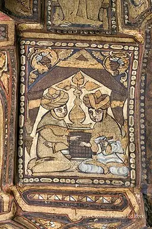
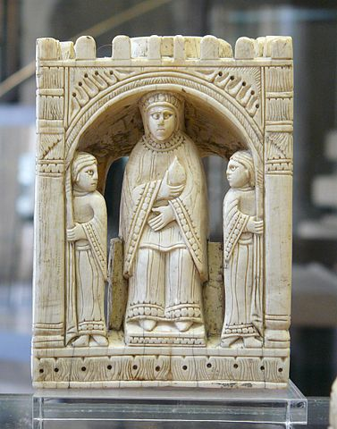
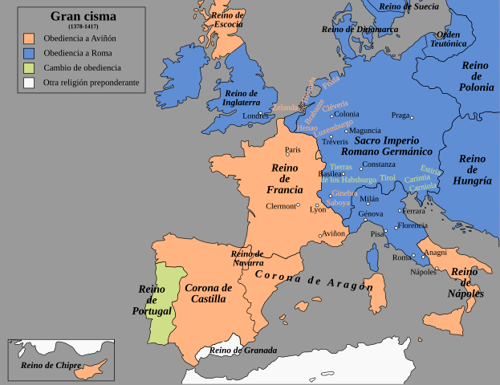

La introducción del juego coincidió con la Plena Edad Media,
el inicio de la baja edad media y etapa previa a la crisis del siglo XIV.
Entonces se dieron los últimos y más destacados
periodos medievales de renacimiento, destacando por la influencia
en el ajedrez principalmente el renacimiento otoniano (continuación del
carolingio), y el pre-renacimiento gótico del siglo XII, que trajo la
revitalización del comercio, la aparición de la burguesía y la consolidación
de los reinos cristianos. El periodo se interrumpió en el siglo XIV por la
epidemia de la Peste Negra.
La expansión del Shatranj por la Europa occidental es
arqueológicamente
presente en varios lugares.
En el siglo X las piezas de lujo son sobre todo de cristal, de manufactura
musulmana, y las más sencillas, de hueso. Empezando en el siglo XI,
las piezas vuelven a tomar forma figurativa, como la habían tenido en
Persia antes de la dominación musulmana. En el siglo XII empiezan a ser
habituales las piezas figurativas, pero todavía compartiendo espacio con piezas
de marfil simbólicas abstractas que ahora incorporan grabados, a veces
decorativos, pero la tendencia es representar el significado de la pieza. Así,
en el siglo XIII prácticamente desaparecen las piezas simbólicas características
del Shatranj islámico, todavía presentes en Europa hasta finales del
siglo XIV.
En la Baja Edad Media, y después de superar la crisis por la Peste Negra
en el siglo XIV, la reforma del juego en el siglo XV coincidirá con la aparición
de los ricos comerciantes y el alta burguesía, los mecenas y el
preludio del Renacimiento. La nobleza pierde importancia en favor del rey
y los cortesanos, de forma que pronto el conocimiento del juego es parte de los
conocimientos que se requieren en un cortesano, emulando las indicaciones de los
antiguos sabios musulmanes.
Período cálido medieval (950 - 1250)
El período cálido medieval u óptimo climático medieval
fue un periodo
de clima extraordinariamente caluroso en Europa y otras regiones, que duró
desde el año
950 al 1250 EC. Durante unos 300 años, estas nuevas condiciones
climáticas
modificaron los ecosistemas y alteraron radicalmente las sociedades humanas.
A medida que el norte de Europa se calentaba, los límites de cultivo eran más
elevados y se
encontraban más al norte, de manera que la agricultura se extendía y
generaba excedentes
alimentarios. En aquella época, Inglaterra era lo bastante cálida
como para mantener
viñedos, los gobiernos centralizados de Europa se hacían cada vez más
fuertes, la gente ya
no necesitaba fortificaciones para proteger sus tierras cultivables, antes
limitadas, y
muchas personas se marcharon en busca de nuevas tierras.
Con la disminución del hielo marino y terrestre en el Ártico debido al
aumento de las
temperaturas, se hizo posible acceder a nuevas tierras y los vikingos
viajaron
más al norte. La expansión de la cultura nórdica a través de Islandia
hasta el
sur de Groenlandia y el establecimiento definitivo de asentamientos aislados
en
Terranova se produjeron en esta época.
A principios del siglo XIII comenzaron las conquistas de Gengis
Kan y sus
hordas mongolas. Al parecer, la abundancia de humedad proporcionó la
potencia necesaria
para el rápido crecimiento del Imperio mongol. El soldado mongol solía
disponer de cinco
corceles. Con un gran ejército, eso se traduce rápidamente en enormes
rebaños y una enorme necesidad de hierba.
Los monasterios y manuscritos
Claustro del Monasterio de Ripoll.
Foto: José Luis Mieza, CC BY 2.0, via Wikimedia Commons
Es conocida la importancia de los monasterios en la elaboración de copias y
traducciones de las obras clásicas existentes, Las invasiones de los pueblos
nórdicos en el Imperio de Occidente iniciadas a comienzos del siglo V
destruyeron las bibliotecas imperiales extendidas por gran parte de Italia.
Muchos de sus volúmenes, que contenían la gran tradición clásica latina, fueron
conservados en bibliotecas particulares. Importantes depósitos de libros
clásicos
conjuntamente con los textos eclesiásticos latinos fueron establecidos en las
comunidades cristianas.
Durante toda la Edad Media, desde la fundación de
Montecasino (529) hasta el siglo XV,
las bibliotecas de la Europa occidental fueran exclusivamente eclesiásticas,
pertenecientes a los monasterios o a las catedrales, y, a partir del siglo XIII,
en las universidades. La regla benedictina, con sus prescripciones obligando a
la
lectura y la escritura, ponía los cimientos del scriptorium y la
biblioteca
que hubo en todos los monasterios que la orden extendió por Europa.
Es en los monasterios que encontramos la primera referencia al ajedrez en
occidente, Versus de scachis, en la abadía benedictina de
Einsiedeln (Suiza), con fuerte vinculación con la dinastía
otoniana
del Sacro Imperio Romano germánico, quienes tuvieron relación con
Gerberto de Aurillac, el papa Silvestre II, que estudió en
el
Monasterio de Santa Maria de Ripoll.
Con unas comunicaciones casi nulas en la baja Edad Media, y muy exiguas en la
plena
Edad Media, las comunicaciones entre monasterios son muy importantes, y
traducciones
del monasterio de Ripoll se usaron, por ejemplo, en la abadía de Reichenau, en
el
lago Constanza. Pensamos que prácticamente hasta el comienzo del siglo XII, y la
revitalización del comercio en el siglo XIII, el modo habitual de viajar era
entre
monasterios, en vez de hacerlo entre ciudades.
La situación en Oriente se alargó durante unos siglos, y desde Constantino
hasta Justiniano se organizaron varias bibliotecas, en Asia Menor,
Alejandría, Palestina, Atenas, los monasterios del monte Athos, y sobre todo,
la biblioteca Imperial de Constantinopla. Estas bibliotecas sufrieron
múltiples
incendios e invasiones, generalmente destructivas. La biblioteca imperial fue la
más
importante, llegando a tener unos 100_000 ejemplares. Pero después de dos
importantes
incendios en los siglos V y VIII, a inicios del siglo XIII sufrió el saqueo de
los
croatas francos y venecianos en la cuarta cruzada. La biblioteca Imperial,
centro de
conservación principalmente de escritos griegos, desaparece definitivamente con
la
invasión de Constantinopla del siglo XV, siendo, aun así, la fuente más
importante de
los clásicos griegos que han llegado hasta la actualidad.
Aún considerando la importancia de Constantinopla, con una importante tarea de
conservación
y copia de manuscritos para su preservación, no fue un centro importante de
generación
de nuevos documentos, ni de difusión de los existentes, pues no asociaba una
escuela
o universidad, y tampoco hay constancia que fuera una biblioteca pública; la
escuela
neoplatónica de Atenas fue cerrada, y sus eruditos perseguidos, por Justiniano.
Los
contenidos generados por el Imperio Romano de Oriente desde Justiniano
fueron muy
exiguos. Por ejemplo, se considera que se jugó a ajedrez en
Constantinopla, y algunos
testimonios lo atestiguan, pero las referencias son prácticamente nulas. Llegado
el
siglo X, Damasco, Bagdad o Córdoba ya tenían más importancia cultural, pues
habían
acumulado gran parte de los originales, que se copiaban en árabe, y eran los
centros
de producción y difusión cultural.
El imperio sasánida (226-651) tenía tres centros de educación, en
Ctesifonte, Resaena,
pero principalmente la academia de Gundeshapur, que se convirtió en el
centro
intelectual del imperio en tiempo de Cosroes I, ofreciendo refugio a los
intelectuales
helenísticos de la escuela neoplatónica de Atenas, perseguidos por Justiniano
I en el
529. Esta escuela también hizo muchas traducciones al Pahlavi, el
persa sasánida.
En el año 825, ya Persia bajo dominación musulmana, se creó La Casa de
la Sabiduría
o Gran Biblioteca de Bagdad, emulando la academia de
Gundeshapur; en
realidad el centro académico de Bagdad se nutrió de los eruditos de Gundeshapur,
empezando la
rápida decadencia de la academia persa. La Gran Biblioteca de Bagdad es
considerada la
primera universidad de la historia, y actuó como centro de difusión del
pensamiento
islámico durante la Edad de oro del islam. Sus eruditos actuaban también
como
funcionarios, haciendo trabajos de médicos, arquitectos y asesores políticos,
entre otros.
Fue destruida por los mongoles durante el asedio de Bagdad (1258).
Muchos conocidos eruditos escribieron libros sobre el Shatranj en esta
edad de oro:
Al-Suli, con el nombre completo Abū Bakr Muḥammad ibn Yaḥyā ibn
al-'Abbās al-Ṣūlī
(أبو بكر محمد بن يحيى بن العباس الصولي) escribió:
Kitāb al-Shiṭranj al-Nisḥa al-Awala (كتاب الشطرنج النسحة الاولة)
Primera versión del libro de ajedrez.
Kitāb al-Shiṭranj al-Nisḥa ath-Thānīa (كتاب الشطرنج النسحة الثانية)
Libro de ajedrez segunda edición.
Al-Lajlaj, alumno de Al-Suli, con el nombre completo
Abu al-Faraj Muhammad ibn Ubaid Allah al-Lajlaj (ابو الفرج محمد بن
عبيد الله
اللَجْلاج)
escribió Manṣūbāt al-Shiṭranj (منصوبات الشطرنج) Posiciones de
ajedrez.
Al-Adlī (العَدْلى): Kitāb al-Shiṭranj (كتاب الشطرنج) Libro
de ajedrez.
Al-Rāzī (الرازى): Kitāb latīf fī al- Shiṭranj (كتاب لطيف في
الشطرنج)
Un buen libro de ajedrez.
Miniatura de les Maqamat (colección de cuentos) de Al-Hariri
Foto: Zereshk, Public domain, via Wikimedia Commons
Desde el siglo IX una importante red de bibliotecas se extendió por
todo el mundo
islámico: Bagdad, El Cairo, Alejandría, Córdoba, Toledo y Granada. La
biblioteca de
Córdoba llegó a tener 400_000 ejemplares en el siglo X, mientras que la
biblioteca de
los cluniacenses en el siglo XI no disponía más que de unos centenares de
volúmenes;
por eso la gran importancia de la Escuela de Traductores de Toledo en los
siglos XII y XIII, que tradujeron muchos manuscritos árabes.
También muchos judíos actuaron de traductores, y así serían un transmisores del
legado
cultural y científico del mundo árabe, tanto para judíos como para cristianos.
En occidente es reconocida la obra de Alfonso X de Castilla,
principalmente un
compendio de conocimiento de origen musulmán, pues los contenidos islámicos
referentes
al Shatranj y otros juegos fueron bastante extensos, principalmente de
escritores
de origen persa.
Ya en el siglo XIII, París fue la primera ciudad al tener un gran
intercambio comercial
de manuscritos, con los productores de manuscritos encargados de hacer libros
específicos
para personas específicas. París tenía una gran población de personas ricas
alfabetizadas,
suficiente para apoyar a las personas que producían los manuscritos. Esta época
medieval
marcó el cambio en la producción de manuscritos de los monjes en los monasterios
a los
libreros y escribas que vivían de su trabajo en las ciudades. En el siglo
XI y XII
el ajedrez se popularizó entre monjes, la nobleza y el clero, pero en el XIII
existen
referencias de su uso por soldados de las cruzadas, siendo así un factor más
para la
llegada del juego a los mercaderes ricos y profesionales cultos que empezaron a
aparecer
en las ciudades.
Los siglos XIII y XIV trajeron un cambio profundo a las bibliotecas
medievales.
Aparecen las universidades, y las bibliotecas universitarias, a pesar de
que no
llegaron realmente a tener importancia hasta el Renacimiento. Las colecciones
privadas de
libros tuvieron un gran incremento. En Italia, los primeros humanistas,
Petrarca (1304-1374), Boccaccio (1313-1375) y, especialmente,
Poggio Bracciolini (1380-1459), recorrieron las antiguas abadías y se
relacionaron
con los mercaderes de oriente en busca de textos clásicos griegos y latinos.
Inmigración europea en tierras islámicas
Interior de la Mezquita de Córdoba.
Foto: Timor Espallargas, CC BY-SA 2.5,
vía Wikimedia Commons
Muchas ciudades islámicas eran grandes centros de conocimiento y bienestar,
además de
existir gran tolerancia religiosa, de forma que eran habituales los viajes en
Damasco,
Bagdad, y Córdoba. Los podríamos considerar viajes culturales, y
el
bienestar de estas ciudades incitaba a muchos a fijar la residencia, dándose el
caso de
frecuentes conversiones al islam de cristianos inmigrantes; un sencillo
fenómeno de inmigración cultural y económica en las ciudades ricas,
cultas y
desarrolladas del islam.
En el siglo X, en tiempo del califa Abd-ar-Rahman III (891 - 961) y de su
hijo
Al-Hakam II (915 - 976), al-Ándalus disfrutó de un esplendor económico y
cultural,
con centro en Córdoba, sin precedentes. Hubo un alto grado de tolerancia de
forma que
filósofos, eruditos, artistas y científicos de varias procedencias, ingresaron
en sus
cortes. Al-Hakam II creó en Córdoba la biblioteca que fue la más
importante
y rica de Europa. Los traductores tradujeron miles de obras griegas y
latinas al
árabe. El califato, convertido en un importante estado a finales del reinado de
Abd-ar-Rahman III, mantuvo relaciones diplomáticas con el Imperio
bizantino y
el Sacro Imperio Romano germánico. El califa mantuvo una delegación permanente
en
Bagdad para copiar o adquirir cualquier volumen que pudiera ser publicado, y
también
mantenía relaciones con las delegaciones de Constantinopla, Alejandría o
Damasco,
ciudades también muy ricas en cultura, que le permitieron seguir enriqueciendo
la
biblioteca de Córdoba.
Durante los siglos XI y XII, muchos eruditos cristianos viajaron a tierras
musulmanas
para aprender ciencias. Ejemplos destacados son Leonardo Fibonacci de
Pisa
(1170 – 1250), un importante matemático, y Adelardo de Bath (1080 – 1152)
que hizo
traducciones al latín de muchas obras científicas árabes importantes, incluyendo
antiguos
textos griegos que solo existían como traducciones en el árabe, y fueron así
introducidas
en Europa. Otro caso fue Constantino el Africano (1017 - 1087), uno de
los
introductores de la medicina árabe a Europa. En los siglos XI al XIV numerosos
estudiantes
europeos asistieron a centros musulmanes de enseñanza superior, similares a las
universidades occidentales.
Peregrinación
Otro motivo de los cristianos por las visitas a tierras islámicas fueron las
peregrinaciones
a Tierra Santa, Palestina. Constantino I en el 330 trasladó
a Bizancio
la capital del imperio, y construyó lugares de culto cristiano en Jerusalén,
como la Iglesia
del Santo Sepulcro. En el 603, el papa Gregorio I encargó la
construcción de
un hospital en Jerusalén, que era parte del imperio romano de Oriente,
para atender y
cuidar a los peregrinos cristianos en Tierra Santa (un hospital entonces era un
tipo de
albergue). En el 614 lo impere sasánida conquistó Jerusalén, hasta ser
reconquistada en 629
por el emperador Heraclio, pero la Jerusalén bizantina finalmente fue
conquistada
por los árabes en 638. En el año 800, Carlomagno amplió el
hospital de
Jerusalén, y le añadió una biblioteca.
Desde el siglo IV se establecieron nuevas rutas de peregrinación atravesando
las tierras del
imperio romano de Oriente, rutas que no habían estado comunes hasta
entonces, pueto que los
cristianos habían sido perseguidos. Estas rutas durante muchos siglos
representaron un
flujo cultural importante que atravesaba Constantinopla. Más tarde,
finalizando el
siglo XI, estas rutas se aprovecharon para las cruzadas.
Otra peregrinación importante serían las rutas romeas, para llegar a Roma.
Tuvieron
diferentes variantes, con la facilidad de existir todavía a menudo las vías
romanas, incluyendo
puentes para atravesar los pasos de los ríos más difíciles.
Cómo se puede leer en el apartado de Castilla y León,
también la peregrinación por el camino de Santiago empieza a ser
una ruta cultural
importante para Europa desde el siglo XI. Contribuye a la comunicación
entre monasterios,
y desde el siglo XII es ya una ruta frecuentada también por la nobleza.
Es en general en el siglo XI cuando se empiezan a retomar las actividades
comerciales de largo
alcance, limitadas en Europa hasta entonces a las actividades de los musulmanes,
las actividades
marítimas del imperio romano de Oriente y las actividades de los vikingos,
actividades que
fueron guerreras en el oeste, pero más comerciales en el este. Las rutas de
peregrinación
empezaron a ser protegidas por los reyes de la cristiandad, favoreciendo
que fueran
aprovechadas para el comercio.
La
Iglesia
El primer caso de prohibición que tenemos constancia es la ordenanza del año
529
promulgada por el emperador Justiniano del imperio romano de Oriente,
cuando cerró
la Academia neoplatónica y las escuelas de Atenas. Se prohibía enseñar
filosofía,
explicar las leyes y jugar a los dados. Esto fue pocos años
antes de la
llegada del ajedrez a Persia, pero la prohibición podría haber
retardado la entrada
del ajedrez en el imperio Bizantino, donde lo llamaron Zaquitrión.
También el Islam tuvo sus prohibiciones. En el año 655, el
Califa Ali Ben Abu-Talib reprobó el ajedrez debido a que las
piezas tenían
figuras de ídolos. En el año 680 el Islam interpretaba la regla prohibiendo
el ajedrez,
aunque los mismos Califas lo jugaban y tenían jugadores de ajedrez en su corte.
Hacia el año 1061 Pedro Damián escribió al papa
Alejandro II (papa entre 1061 y 1073) quejándose del uso del ajedrez por
los clérigos,
por ser un juego deshonesto, absurdo, libidinoso, y una distracción de
las
obligaciones para los clérigos.
Por el año 1093, poco después del Gran Cisma de Oriente (1054), la Iglesia
oriental
ortodoxa condenó al ajedrez. La Iglesia erradicó el ajedrez en Rusia como un
vestigio del
paganismo.
Por el año de 1115, el emperador Aleix I Comnè era aficionado a jugar. A
pesar de eso,
aún fué censurado en las Iglesias de oriente hasta el año de 1125. John
Zonares, monje
que había sido capitán de la guardia imperial Bizantina, emite una directiva
prohibiendo el
ajedrez por ser una depravación.
Aunque algunos papas fueron aficionados al ajedrez, como
Gregorio VI (papa de 1045 a 1047),
Innocencio III (papa de 1198 a 1216) o
Innocencio IV (papa de 1243 a 1254), y la figura de
Silvestre II (papa de 999 a 1003)
podria
haber sido decisiva para la difusión del ajedrez por Europa tras su paso
por el
Monasterio de Ripoll de Catalunya, las diversas
prohibiciones y condenas se sucedieron desde el siglo
XI,
cuando Pedro Damián escribió al papa
Alejandro II
quejándose del uso del ajedrez por los clérigos.
Otro motivo de reticencia al ajedrez en occidente puede haber sido su origen
musulmán,
cuando en 1095, acabando el siglo XI, hubo la declaración de guerra santa
(las cruzadas) por el papa Urbano II, como respuesta a la petición del
emperador
romano de Oriente, Alejo I Comneno, pidiendo ayuda militar contra los
selyúcidas.
Ya corrían voces criticando el ajedrez como entretenimiento poco apto para
los soldados,
y el motivo no está claro, pero los caballeros Templarios tuvieron
prohibición
de jugar a ajedrez, dictada por San Bernardo de Claraval en 1128.
La situación se alargó durante 500 años, hasta la completa aceptación
del juego en el
siglo XVI, con el papa Pío IV, de la familia de los
Médici, tras el concilio
de Trento, coincidiendo con la estancia en Roma de Ruy López de Segura,
entonces
considerado el mejor jugador de ajedrez de Castilla.
Sin embargo, en 1551, el Zar Iván IV, Iván el Terrible, proclamó
la
prohibición del ajedrez en Rusia, que se mantuvo hasta entrado el siglo
XVII.
Cruzadas
Mapa de la primera cruzada
1096-1099
Original work: Captain Blood at de.wikipedia;
Translation: Oxag at fr.wikipedia.,
Public domain, via Wikimedia Commons
Desde el final del siglo XI hasta el siglo XIII se dio el fenómeno de
las cruzadas, campañas militares, peregrinajes armados y
establecimiento de nuevos reinos cristianos, que también tuvo el efecto
indirecto de intercambios culturales, pero el carácter
forzado determinado por las circunstancias los acerca más a los botines de
guerra;
a menudo las piezas de ajedrez de cristal de roca o de marfil se
usaban como embellecedores de otras piezas, y, a pesar de existir referencias,
no se
ha encontrado ningún juego de piezas con gemas preciosas.
A pesar de que muchos nobles viajaron a las tierras de Palestina, el fenómeno
frenó los
intercambios que generaban el comercio y la inmigración cristiana pacífica a
tierras
del islam. A pesar de esto, resultó fundamental para el restablecimiento del
comercio internacional, y también facilitó el acercamiento a
algunos elementos de la cultura islámica; por ejemplo, se explican historias de
soldados
que juegan al ajedrez en sus tiempos libres, indicando que el ajedrez ya eran un
juego
popularmente conocido, y la guerra contribuyó a su difusión.
También se ha de recordar que la rutas de las cruzadas hacia Palestina
generalmente
atravesaban el imperio romano de Oriente y Constantinopla.
Las relaciones entre los europeos occidentales (latinos o francos en la
nomenclatura
de la época) y los europeos orientales (griegos) se habían complicado a partir
del
Gran Cisma de Oriente iniciado en el 1054, justo anterior al
inicio
de las cruzadas. A partir de entonces los occidentales se habían mostrado
hostiles a los
orientales, tal como se evidenció durante la Primera, Segunda y Tercera Cruzada.
Estas
relaciones se deterioraron todavía más el 1182 (antes del inicio de la Tercera
Cruzada),
cuando todos los extranjeros de Constantinopla habían sido masacrados y los
comerciantes
venecianos habían sido expulsados por los emperadores bizantinos de la dinastía
Ángelo.
Primera Cruzada (1096 - 1099)
Aprovechando la llamada de auxilio del emperador bizantino Alejo I
Comneno, el
papa Urbano II expuso la necesidad de que los cristianos de
Occidente se
comprometieran a una guerra santa contra los turcos, que estaban
ejerciendo
violencia sobre los reinos cristianos de Oriente y maltratando a los
peregrinos que
iban a Jerusalén, y la conquista de la llamada Tierra Santa.
En la primera cruzada, apareció el fenómeno de la
cruzada popular, movilizando unas
100_000 personas
humildes, hombres, mujeres y niños, respondiendo al llamamiento papal. Aún
con la práctica
aniquilación de la totalidad de los 30_000 cruzados que atravesaron el
Bósforo auxiliados
por los barcos les proporcionó el emperador Alejo I Comneno, muchos
otros llegaron
a Constantinopla o a dominios del imperio romano de Oriente sin finalizar el
viaje,
estrechando así el contacto de franceses, alemanes e italianos con la
cultura del imperio
romano de Oriente.
En la cruzada de los príncipes, destacaban las fuerzas normandas, que
recientemente
habían estado en conflicto con el imperio de Oriente en territorios de la
península
italiana, por lo que el emperador desconfiaba de ellos. Sin embargo, esta
cruzada, mucho
más organizada, consiguió conquistar gran parte de Anatolia, Líbano y
Jerusalem, siendo
esta primera cruzada la única bélicamente exitosa, aunque solo una mínima
parte fué
retornada al imperio romano de Oriente.
Cuarta Cruzada (1202 - 1204)
Conquista de Constantinopla por los
cruzados en 1204
David Aubert (1449-79),
Public domain, via Wikimedia Commons
Partitio terrarum imperii Romaniae
LatinEmpire, CC BY-SA 3.0,
via la Wikimedia Commons
En 1202 la República de Venecia había terminado los preparativos de la
cruzada que tenía por fin atacar directamente el corazón del mundo islámico
de la época, la ciudad del Cairo, por encargo papal. Pero muchos embarcaron
en otros puertos, además que solo participaron 12_000 hombres, en vez de los
33_500 hombres presupuestados. Venecia exigió la totalidad del pago
comprometido, 85_000 marcos de plata, pero los cruzados tan solo pudieron
recaudar 51_000. Esto los dejó en un estado de suma pobreza, y un desastre
económico también para los venecianos, que habían parado su comercio durante
todo un año para preparar la expedición. La propuesta fue cambiar el objetivo,
y que los cruzados pagaran sus deudas capturando
el puerto
de Zadar, situado en Dalmacia.
Esta ciudad ya había estado dominada económicamente por Venecia durante el
siglo XII, pero en 1181 se había rebelado y buscando la protección del rey
de Hungría y Croacia. Pero el rey de Hungría también era católico y además
se había ofrecido, al menos de manera teórica, a participar él mismo en la
cruzada.
Los cruzados pactaron con el príncipe hermano del emperador y llegaron a un
acuerdo para ayudarlo a derribar a su hermano. El nuevo emperador,
Alejo IV Ángelo se dio cuenta que no tenía riqueza suficiente para
pagar el pacto, aún con la destrucción que llevó a cabo de iconos romanos
y romanos de Oriente valiosísimos, para poder extraer el oro y la plata.
Los cruzados, insatisfechos, provocaron disturbios, y se quemó gran parte de
la ciudad.
Finalmente los griegos asesinaron a Alejo IV Ángelo, y el nuevo
emperador Alejo V Ducas negó el pacto con los cruzados y venecianos,
que saquearon Constantinopla. Según un
tratado prearreglado, el imperio se distribuía entre Venecia y los líderes
de la cruzada, y se establecía el Imperio Latino (1204), que duró
hasta que Constantinopla fue reconquistada por el imperio romano de Oriente
en 1261, que tuvo el nombre de Imperio de Nicea hasta reconquistar
Constantinopla.
El comercio
En el Alta edad mediana, antes del año 1000, Europa era un
territorio asolado por los desórdenes políticos y por la
carencia de seguridad, con una economía de subsistencia y poca
circulación de mercancías. El comercio era principalmente un
fenómeno local sin rutas de largo alcance, quedando estas
actividades en manos del imperio romano de Oriente, que
traficaba por mar, y sobre todo del mundo musulmán. Los
mercados urbanos empezaron a animar la vida económica interior
a partir de los siglos IX y X, y desde el siglo XI las primeras
ferias incrementaron el comercio interior y exterior. Se
incrementó notablemente la capacidad adquisitiva de los
sectores más poderosos, los cuales se sintieron atraídos por
los productos de lujo procedentes del Oriente.
Las peregrinaciones y las cruzadas tendrían un papel muy
importante en este renacimiento comercial que se
manifestaría con la ampliación y renovación de rutas y del
volumen, número y calidad de las mercancías, con la aparición
de las primeras asociaciones armadas de mercaderes, y con la de
nuevas ferias y mercados fijos.
Además de las rutas marítimas, en la Europa continental
existían algunas rutas terrestres y fluviales, muchas de
las cuales se piensa que se remontan a Carlomagno, a pesar de que
no existen constancias escritas anteriores al siglo XI, cuando
resultaron de gran importancia en el renacimiento otoniano,
el crecimiento de las repúblicas marítimas de la península
italiana, y el prerrenacimiento gótico del siglo XII.
Volga y Dniéper:
Rutas de los jázaros y los varegos
Península iberica: Castilla y León
Invasión islámica de la península ibèrica.
NACLE, CC BY-SA 4.0, via Wikimedia Commons
Fue, sin dudas, la península ibérica la principal puerta de
entrada del Shatranj en Europa, como consecuencia de la
presencia musulmana en la península
desde comienzos del siglo VIIIhasta finales
del XV. Aun así,
se tiene que entender que en los siglos IX, X, y gran parte del siglo XI,
el contacto de los reinos cristianos de la península con el resto de Europa
fue generalmente lejana para mantener un fluido intercambio cultural.
Prácticamente fue con la muerte de Almanzor y la aparición de
los Reinos de Taifas cuando empezaron los tímidos contactos
europeos de Sancho III de Pamplona, a finales del siglo X e
inicios del siglo XI. Anteriormente, la resistencia astur y
vascona estaba en un aislamiento que incluso se mantenía
culturalmente separada del mundo islámico, sus enemigos.
El camino de Santiago fue un
puente importante de intercambios culturales con Europa, pero el
inicio a nivel europeo se puede datar en el siglo X, con la
peregrinación de algunos clérigos y obispos. La gran expansión y
popularización se da en el siglo XI, coincidiendo con un entorno
político más favorable después de la muerte de Almanzor,
y se empieza la construcción de hospitales y mejoras de los caminos
y calzadas. La construcción de la actual catedral de Santiago se
inició en 1075, la última piedra fue colocada en 1122 y la catedral
fue consagrada en 1128.
A final del siglo XI el reino de Castilla incorpora Toledo, que
ya en el siglo XII se convertirá en un importante centro cultural,
coincidiendo con el apoyo de las autoridades al Camino de
Santiago protegiendo a los peregrinos. En el siglo XIII
ya existe una gran infraestructura asociada en el Camino,
la afluencia de nobles se incrementa, y el retorno cultural hacia
la península ya es bastante significativo. Después de unos primeros
años de convivencia religiosa, con la apropiación de los escritos
árabes, la Escuela de Traductores de Toledo creó a
inicios del siglo XII un centro cultural de mucha importancia
para toda Europa. Este centro llegó a su clímax en el siglo XIII, con
Alfonso X, que
hizo una gran recopilación del conocimiento islámico del ajedrez,
probablemente conocimiento de origen persa, incorporando muchas
aportaciones castellanas.
Así, son los siglos XII y XIII el gran momento cultural de
Castilla y León, siendo principalmente a lo largo el siglo XIII
que la obra generada por la Escuela de Traductores de Toledo
cobra relevancia. De hecho, a pesar de haberse cerrado después de la
muerte de Alfonso X, la importancia de sus trabajos se mantendrá
en los próximos siglos.
Península iberica: Cataluña y Aragòn
Mapa anacrónico de las posesiones
de la Corona de Aragón.
Milenioscuro (Original) Indpcatll
(Translation), CC BY-SA 4.0 via Wikimedia Commons
A comienzo del siglo IX, durante la época de las invasiones árabes, el
imperio de Carlomagno creó los condados de Cataluña y Aragón
como condados fronterizos para evitar invasiones musulmanas; fueron lo
que se denominó la Marca Hispánica, a pesar de que eran un
conjunto de condados que nunca tuvieron una entidad política común.
En realidad, el reino de Pamplona nunca fue dominado, ni por los
visigodos, ni por los musulmanes. El condado de Aragón se convirtió en
reino después de la unión con el reino de Pamplona, liberándose así del
vasallaje franco, y a principios del siglo XI se liberó del vasallaje
de Pamplona. Cataluña se libera del vasallaje empezando el sistema
hereditario con Guifredo I, y su hijo, Guifredo II, a
principios del siglo X ya no presta vasallaje a los francos.
Encontramos en Cataluña las primeras referencias a fichas de ajedrez
de cristal de roca, mencionadas en el testamento de
Armengol I de Urgel, redactado con ocasión de la
expedición militar de los catalanes contra Córdoba en 1010, con
resultado del saqueo de la ciudad. En 1056, en el testamento de
Ermesinda de Carcasona, también se referencian otras
fichas de ajedrez de cristal de roca.
Además se da el caso de la existencia de juegos de cristal de roca,
como los de Àger, y la
constancia
documental en
otros lugares, como la abadía de Ripoll, o los ya
perdidos de la catedral de Roda de Isábena, o en
el monasterio de San Andrés de Fanlo, en el Sobrarbe, província
de Huesca, Aragón.
Península italiana y Sicília
Italia en el año 1000
Public domain, via Wikimedia Commons

Primera pintura del ajedrez
en occidente, en la Capilla Palatina de Palermo, Sicilia (1143).
Public domain, via Wikimedia Commons
Imperio Romano de Oriente
Imperio Bizantino
Original: Varis - Derivative work: Roke~commonswiki,
CC BY-SA 3.0, via Wikimedia Commons

Reina de marfil Tresor de Saint-Denis,
probablemente fabricada en Salerno, siglo XI
Escultura ecuestre de Otón el Grande en Magdeburgo.
Furmeyer, CC BY-SA 3.0,
via Wikimedia Commons
Sacro Imperio Romanogermánico
Crèdit: A.cano.2, CC BY-SA 4.0,
via Wikimedia Commons
Existen varias leyendas relacionadas con la corte de Carlomagno y el ajedrez:
Leyenda de la creación de la
abadía de Tegernsee
En la corte del rey Pipino (padre de Carlomagno),
se dio la desgraciada situación que un hijo del rey mató a un
hijo de Otger a raíz de una disputa por una partida de
ajedrez.
Los hermanos y nobles bávaros, Adalbert y Otger se
retiraron de la corte, y vueltos a sus dominios abandonaron la
vida
secular y fundaron la abadía de Tegernsee.
Las piezas de Pipino el
Breve
La referencia que parece más histórica aparece en un escrito en latín
medieval,
datado en el siglo XIII, donde se narra la donación por el rey
Pepino el Breve, en el 764 EC, de unas piezas de cristal con
incrustaciones de oro y piedras preciosas a la
abadia de Mozac.
El destino de las piezas, con motivo del traslado de los restos de
San Austremonio, era la elaboración de un relicario, en el
cual tenían que conservarse los restos del santo.
Efectivamente, Pipino el Breve en el año 764, o quizás
Pipino I d'Aquitània en el año 848, hizo trasladar las
reliquias a la abadia de Mozac.
Leyenda del ajedrez de
Carlomagno
Existen varias leyendas vinculando Carlomagno con diversos
juegos de ajedrez existentes, incluso la leyenda referente a un
relicario que poca relación tiene con el ajedrez, y que parece
estar datado en el siglo XIV; la leyenda de este relicario se
encuentra en el anterior enlace.
Incorporamos aquí una de las múltiples leyendas que vinculan a
Carlomagno con el ajedrez; de hecho, existen varios ajedreces
llamados ajedrez de Carlomagno, y elegimos una versión
modificada de la leyenda del ya llamado relicario:
En una fiesta el 4 de abril del 782, en Aquisgrán, para conmemorar
el cuadragésimo cumpleaños de Carlomagno, pretendía
enfrentarse con el mejor ajedrecista del reino, un soldado con el
nombre de Garin el franco. Usaron un ajedrez regalo de
Ibn-al-Arabi, gobernador musulmán de Barcelona, como
muestra de agradecimiento por la ayuda que Carlomagno le
había prestado cuatro años antes contra los vascones, cuando
tuvo que retirarse por el desfiladero navarro de Roncesvalles.
La corte se maravilló ante aquel juego de ajedrez, realizado por
artesanos
árabes. Las piezas mostraban indicios de su origen indio y
persa. El tablero
forjado en plata y oro, tenía una medida de un metro por cada
lado. Las piezas
eran de metales preciosos con filigranas, e incrustaciones de
diamantes, rubíes,
zafiros y esmeraldas sin tallar. A causa a del resplandor
parecía brillar con
una luz interior que hipnotizaba a quién lo contemplaba.
Según la leyenda, Carlomagno influenciado por extraños efluvios
que salían del
tablero, propuso una apuesta que consistía en el siguiente:
Si el soldado Garín me gana una partida, le concedo los
territorios de mi reino, que va desde Aquisgrán hasta los
Pirineos vascos y la mano de mi hija mayor en matrimonio.
Si pierde será decapitado en este mismo patio al
amanecer.
Cuando llevaban más de una hora jugando y con convulsiones y
excitados, Carlomagno se incorporó con gran esfuerzo y lanzó
el tablero al suelo como si se liberara de una maldición, las
piezas cayeron al suelo y la partida se interrumpió.
A decir de los presentes la partida se abandonó, puesto que
consideraron que aquel ajedrez estaban poseído por una fuerza
maligna. Sin embargo, en un tono menos tenso se inició una
nueva partida, triunfando Garin y recibiendo como recompensa
la Propiedad de Montglane, en los Bajos Pirineos.
Partida de ajedrez por la
mano de Matilde de Alemania
Ezzo, conde palatino de Lotaringia, ganó su esposa,
Matilde de Alemania,
en una partida de ajedrez. Jugó contra su hermano, Otón
III, por su mano en matrimonio, y ganó.
Otó II rebent homenatges de les províncies, simbolitzades per dones
germanes, franceses, italianes i alamanes.
Public domain, via Wikimedia Commons
Silvestre II en l'Evangeliari d'Otó III
Meister der Reichenauer Schule, Public domain,
via Wikimedia Commons
La crisis del siglo XIV
Pequeña Edad de Hielo (1300 - 1250)
La Pequeña Edad de Hielo trajo inviernos muy fríos, el avance de los
glaciares, y los canales y los ríos a menudo se helaron durante el invierno:
el Ebro, el Támesis o los canales de los Países Bajos. Los inviernos severos
afectaron la vida humana. La población de Islandia descendió en la mitad, y
las colonias vikingas en Groenlandia desaparecieron.
Durante muchos años, la nieve cubría la tierra durante muchos meses. Muchas
primaveras y veranos eran fríos y
lluviosos, aunque había una gran variabilidad entre unos años y otros. Las
cosechas en toda Europa tuvieron que
adaptarse a la corta estación de cultivo y había muchos años de carestía
y hambre. Los sucesos catastróficos
señalados por lluvias intensas, nevadas y violentas tormentas en el mar
causaron inundaciones masivas, pero
se mezclaron con los interludios de severas sequías.
A pesar de que este periodo se alargó hasta el 1850, y podemos encontrar una
extensa red de neveros artificiales que se construyeron y se mantuvieron entre
los siglos XVI y XIX a lo largo del Mediterráneo, algunos ubicados en áreas
donde no nieva en la actualidad ni un solo día en el año, las consecuencias
en los primeros años serían más extremas, por el cambio drástico que comportó.
Entre 1310 y 1330 Europa vivió alguno de los peores y más duraderos
periodos de mal tiempo de toda la Edad Media, con inviernos duros y veranos
fríos y lluviosos, y entre 1315 y 1317 se produjo la
Gran Hambruna
como consecuencia de las dificultades en la agricultura y ganadería provocadas
por el clima. Una hambruna en la Europa de la Edad Media implicaba la mortandad
masiva por inanición.
Pequeñas situaciones de hambre localizadas fueron frecuentes en la Edad Media,
pero esta superó todas las otras en extensión, duración y mortandad. Desencadenó
todo tipo de conflictos sociales e incrementó la criminalidad. Se produjeron
brotes de canibalismo e infanticidio. Además, esta situación de hambre vino seguida
del episodio de la Peste Negra.
La Peste Negra (1347 - 1354)
El 1347 la Peste Negra llegó a Sicilia y desde allá pasó en Génova; en 1348
había infectado Suiza y toda la península Itálica. Se extendió a Francia y la
península Ibérica y en 1349 llegó a las Islas Británicas. En 1353, después de haber
infectado todo Europa, los focos de la enfermedad se redujeron hasta desaparecer.
La Peste Negra mató como mínimo un tercio de la población del continente,
tuvo posteriores pequeños rebrotes en el mismo siglo XIV y en el siglo XV, y,
en realidad, no fue erradicada hasta el siglo XIX.
Los episodios traumáticos en forma de desastres climáticos hacen que las
personas sean más
sensibles a aceptar cambios en las normas, la reglamentación de los espacios
o las
estructuras de la propiedad. Es lo que se denomina la Doctrina de la
Crisis:
el ser humano es más vulnerable y dócil cuando sufre. Estas
situaciones provocan
un incremento de la desigualdad, haciendo a los ricos más ricos, y los
pobres más pobres.
Sin embargo, la despoblación y la migración de las aldeas a las ciudades
debido a la Peste
Negra causaron una aguda escasez de trabajadores agrícolas. También
en las ciudades,
a raíz de la drástica disminución de la población provocada por la peste,
los salarios
aumentaron y los trabajadores pudieron mudarse a nuevas localidades en
respuesta a las
ofertas salariales.
La peste trajo el final de la servidumbre en Europa occidental. El
sistema señorial
ya estaba en problemas, pero la peste negra aseguró su desaparición en gran
parte de Europa
occidental y central en 1500, aunque la poca afectación de la peste en la
Europa oriental
provocó que el régimen feudal se mantuviera en la parte más oriental de
Europa. En
occidente, los nobles terratenientes se vieron obligados a dar
mejores condiciones de tenencia. Esto resultó en condiciones de
aparcería,
mediante los cuales el campesino usaba la tierra y el señor recibía un pago
anual fijo.
Posterior refeudalización
Aviñón y cisma de Occidente
(1378 - 1418)

División de Europa durante el Cisma de Occidente.
Unos reinos dieron su obediencia al papa de Aviñón (en naranja),
otros al papa de Roma (en azul) y otros, según la conveniencia,
cambiaron de bando una o más veces.
@lankazame, Mipmapped, rowanwindwhistler, CC BY-SA 3.0,
via Wikimedia Commons
Caiguda de Constantinoble (1453)
Las cadenas de Constantinopla
Photo: David Berkowitz from New York,
NY, USA, CC BY 2.0, via Wikimedia Commons
Regne de Sicília
MapMaster, Rowanwindwhistler, Indpcatll (this version),
CC BY-SA 4.0, via la Wikimedia Commons
Andronikos II Palaiologos, Byzantine emperor (1282-1328)
Byzantine art, Public domain,
via Wikimedia Commons
Mehmed ll, Entrando en Constantinopla
Fausto Zonaro, Public domain,
via Wikimedia Commons


.jpg)